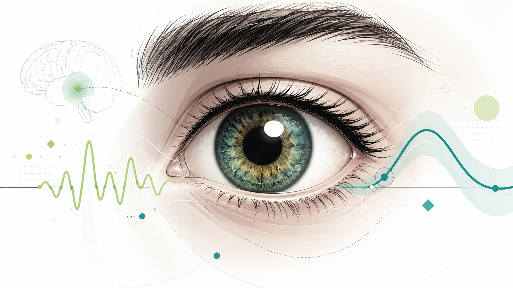

Publications, pre-prints, and conferences
Chronological range covered by the research outputs
As a member of the ArgoNeuT, MicroBooNE, SBND, and DUNE collaborations
As a member of the Shah's Lab
Neutrinos
My physics work has centered on neutrino-argon interactions and the development of Liquid-Argon Time Projection Chamber detectors (LArTPCs). This technology is central to modern neutrino experiments due to its high-definition 3D imaging, calorimetric capabilities, particle identification, and massive scalability potential
In particular, my work has contributed to event reconstruction, neutrino interactions identification, cross section measurements, and neutrino oscillation measurements across multiple neutrino physics collaborations
Cognition
My neuroscience work focuses on the analysis of EEG and multimodal signals to bypass the need for motor or verbal feedback when they are unavailable or unreliable. It directly enables cognition to be assessed and tracked at different levels, including auditory sensory processing, semantic processing, and command-following (e.g. motor imagery)
This work has been validated in both healthy and brain-injured individuals, including children and adults
When the Brain Borrows
Dive into this study on EEG-pupil coupling with clinical applications in traumatic brain injury

Selected work
Showing selected publications and the full archive.